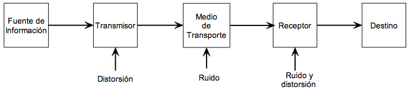
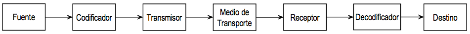

Claude Shannon i Warren Weaver en la decada dels 1940s van concebre un model lineal de comunicació prou general que, en la seva forma original contenia cinc elements: font d'informació, transmissor, canal de transmissió, receptor i destinatari final, tots disposats linealment com es mostra a la següent figura. Aquest model bàsic constitueix el punt de partida per a l'estudi dels sistemes de comunicació i al voltant d'ell es desenvolupa la major part del material d'aquest curs.

Amb el transcurs del temps i l'evolució dels sistemes de comunicació, particularment en els sistemes digitals, el model anterior ha patit algunes modificacions, per tal d'especificar millor alguns elements constitutius de cada un dels blocs anteriors i proporcionar un rang major de aplicacions. Una versió d'aquest model modificat és la que es mostra en el digrama de blocs de la següent figura.
